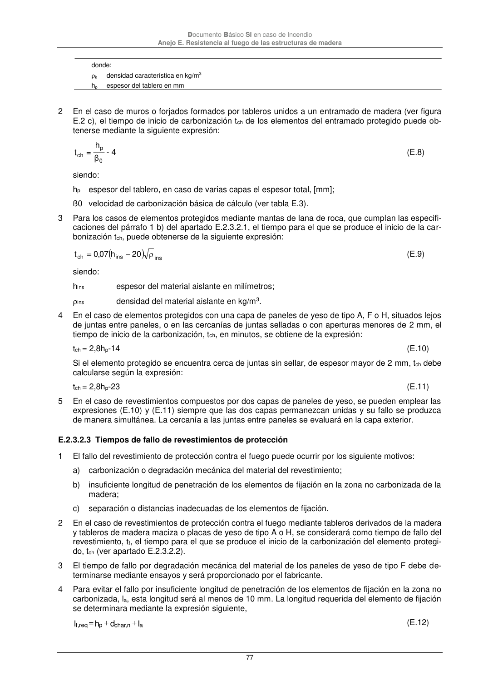

DB-SI · Página 77 · versión 2025-03-04
SHA256: 0a2e78cd62471d9cc5cfe2efbc6aa39fdbad73c124aea7b039f9de96c141e105 · página física 77 de 92 · métodos de encabezado
solo si están cotejados.
Formatos: Markdown · JSON de bloques · PDF p. 77 · imagen PNG
Documento Básico SI en caso de Incendio Anejo E. Resistencia al fuego de las estructuras de madera 77 donde: k densidad característica en kg/m3 hp espesor del tablero en mm 2 En el caso de muros o forjados formados por tableros unidos a un entramado de madera (ver figura E.2 c), el tiempo de inicio de carbonización tch de los elementos del entramado protegido puede ob- tenerse mediante la siguiente expresión: 0 p ch β h = t - 4 (E.8) siendo: hp espesor del tablero, en caso de varias capas el espesor total, [mm]; ß0 velocidad de carbonización básica de cálculo (ver tabla E.3). 3 Para los casos de elementos protegidos mediante mantas de lana de roca, que cumplan las especifi- caciones del párrafo 1 b) del apartado E.2.3.2.1, el tiempo para el que se produce el inicio de la car- bonización tch, puede obtenerse de la siguiente expresión: ins ins ch 20 h 07 ,0 t (E.9) siendo: hins espesor del material aislante en milímetros; ins densidad del material aislante en kg/m3. 4 En el caso de elementos protegidos con una capa de paneles de yeso de tipo A, F o H, situados lejos de juntas entre paneles, o en las cercanías de juntas selladas o con aperturas menores de 2 mm, el tiempo de inicio de la carbonización, tch, en minutos, se obtiene de la expresión: tch = 2,8hp-14 (E.10) Si el elemento protegido se encuentra cerca de juntas sin sellar, de espesor mayor de 2 mm, tch debe calcularse según la expresión: tch = 2,8hp-23 (E.11) 5 En el caso de revestimientos compuestos por dos capas de paneles de yeso, se pueden emplear las expresiones (E.10) y (E.11) siempre que las dos capas permanezcan unidas y su fallo se produzca de manera simultánea. La cercanía a las juntas entre paneles se evaluará en la capa exterior. E.2.3.2.3 Tiempos de fallo de revestimientos de protección 1 El fallo del revestimiento de protección contra el fuego puede ocurrir por los siguiente motivos: a) carbonización o degradación mecánica del material del revestimiento; b) insuficiente longitud de penetración de los elementos de fijación en la zona no carbonizada de la madera; c) separación o distancias inadecuadas de los elementos de fijación. 2 En el caso de revestimientos de protección contra el fuego mediante tableros derivados de la madera y tableros de madera maciza o placas de yeso de tipo A o H, se considerará como tiempo de fallo del revestimiento, tf, el tiempo para el que se produce el inicio de la carbonización del elemento protegi- do, tch (ver apartado E.2.3.2.2). 3 El tiempo de fallo por degradación mecánica del material de los paneles de yeso de tipo F debe de- terminarse mediante ensayos y será proporcionado por el fabricante. 4 Para evitar el fallo por insuficiente longitud de penetración de los elementos de fijación en la zona no carbonizada, la, esta longitud será al menos de 10 mm. La longitud requerida del elemento de fijación se determinara mediante la expresión siguiente, l d h = l a n, char p req ,f (E.12)
